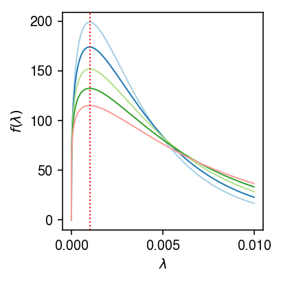
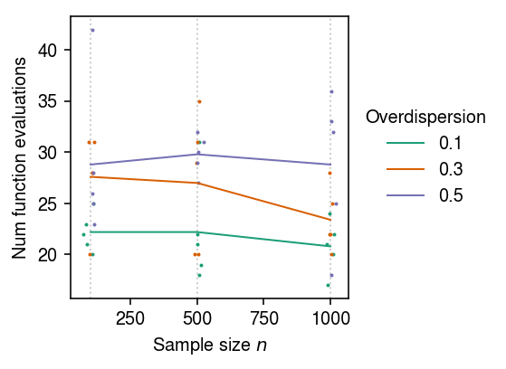

Poisson-unimodal Gamma mixture model
Table of Contents
Introduction
We have previously investigated the use of the following model for scRNA-seq counts coming from a single gene:
\begin{align*} x_{ij} &\sim \operatorname{Poisson}(x_i^+ \lambda_{ij})\\ \lambda_{ij} &\sim g_j(\cdot) = \sum_k \pi_{jk} \operatorname{Uniform}(\cdot; \lambda_{0j}, a_{jk}) \end{align*}
where \(x_i^+ = \sum_j x_{ij}\) and we abuse notation to allow \(a_{jk} <
\lambda_{0j}\). In this model, expression variation is assumed to follow a
unimodal non-parametric distribution \(g_j(\cdot)\), approximated as a large,
but finite mixture of uniforms. The main challenge in fitting this model is
estimating \(\lambda_{0j}\) (with \(\lambda_{0j}\) known, estimating \(g_j\)
is a convex optimization problem solved by mixsqp). The strategy taken in
ashr is to treat the mixsqp problem as a subroutine in line search over
\(\lambda_{0j}\).
Here, we investigate using a unimodal mixture of Gammas (previously considered in Lu & Stephens 2016), which is a slightly less flexible assumption on expression variation, but could allow faster mode estimation.
Setup
import numpy as np import pandas as pd import rpy2.robjects.packages import rpy2.robjects.pandas2ri import scipy.optimize as so import scipy.special as sp import scipy.stats as st ashr = rpy2.robjects.packages.importr('ashr') mixsqp = rpy2.robjects.packages.importr('mixsqp') rpy2.robjects.pandas2ri.activate()
%matplotlib inline %config InlineBackend.figure_formats = set(['retina'])
import matplotlib.pyplot as plt plt.rcParams['figure.facecolor'] = 'w' plt.rcParams['font.family'] = 'Nimbus Sans'
Methods
Unimodal mixture of Gammas
Consider \(\lambda \sim \operatorname{Gamma}(\alpha, \beta)\). Let \(\lambda_0 = (\alpha - 1) / \beta\) (the mode), and \(v = \alpha / \beta^2\) (the variance). Then,
\begin{align*} \beta &= \frac{\lambda_0 + \sqrt{\lambda_0^2 + 4 v}}{2 v}\\ \alpha &= \lambda_0 \frac{\lambda_0 + \sqrt{\lambda_0^2 + 4 v}}{2 v} + 1 \end{align*}and for choice of mode \(\lambda_{0j}\) and grid of variances \(v_{j1}, \ldots, v_{jK}\) we have
\[ \lambda_{ij} \sim g_j(\cdot) = \sum_{k=1}^K \pi_{jk} \operatorname{Gamma}(\cdot; \alpha_{jk}, \beta_{jk}) \]
As an illustrative example,
lam0 = 1e-3 # 1/s -> max(x/s) mixvar = np.exp(np.arange(np.log(1 / 1e5), np.log(5e-3), step=.5 * np.log(2))) grid = np.linspace(0, 1e-2, 1000) cm = plt.get_cmap('Paired') plt.clf() plt.gcf().set_size_inches(3, 3) for i, v in enumerate(mixvar[:5]): b = (lam0 + np.sqrt(lam0 * lam0 + 4 * v)) / (2 * v) a = lam0 * b + 1 plt.plot(grid, st.gamma(a=a, scale=1 / b).pdf(grid), lw=1, c=cm(i)) plt.axvline(x=lam0, c='r', ls=':', lw=1) plt.xlabel('$\lambda$') plt.ylabel('$f(\lambda)$') plt.tight_layout()

The main advantage of assuming a mixture of Gammas is that the marginal likelihood of \(x_{ij}\) is then a mixture of Negative Binomial distributions
\[ p(x_{1j}, \ldots, x_{nj} \mid x_1^+, \ldots, x_n^+, g) = \prod_i \sum_k \pi_{jk} \operatorname{NB}(x_{ij}; \alpha_{jk}, \frac{x_i^+}{x_i^+ + \beta_{jk}}). \]
Expectation-maximization algorithm
Introduce indicator variable \(z_i \in \{1, \ldots, K\}\) denoting which component \(\lambda_i\) was drawn from (dropping index \(j\)), and let \(\zeta_{ik} = p(z_i = k \mid x_i, x_i^+, g)\). Then
\begin{multline*} l(\cdot) = \sum_i E_{z_i \mid x_i, x_i^+, g}[\ln p(x_i, z_i \mid x_i^+, g)] = \\ \sum_{i, k} \zeta_{ik} \left( \ln \pi_k + x_i \ln\left(\frac{x_i^+}{x_i^+ + \beta_k}\right) + \alpha_k \ln\left(\frac{\beta_k}{x_i^+ + \beta_k}\right) + \ln\Gamma(x_i + \alpha_k) - \ln\Gamma(x_i + 1) - \ln\Gamma(\alpha_k) \right) \end{multline*}suggesting an EM algorithm:
E step:
\[ \zeta_{ik} \propto \pi_k \operatorname{NB}(x_{ij}; \alpha_{k}, \frac{x_i^+}{x_i^+ + \beta_{k}}) \]
M step:
- Update \(\boldsymbol\pi\) (solution to
mixsqp) Update \(\lambda_0\) (e.g. backtracking line search in direction of the gradient):
\begin{align*} \frac{\partial l}{\partial \alpha_k} &= \sum_i \zeta_{ik}\left( \ln\left(\frac{\beta_k}{x_i^+ + \beta_k}\right) + \psi(x_i + \alpha_k) - \psi(\alpha_k) \right)\\ \frac{\partial l}{\partial \beta_k} &= \sum_i \zeta_{ik} \left(\frac{\alpha_k}{\beta_k} - \frac{x_i + \alpha_k}{x_i^+ + \beta_k}\right)\\ \frac{\partial \alpha_k}{\partial \beta_k} &= \lambda_0\\ \frac{\partial \alpha_k}{\partial \lambda_0} &= b_k\\ \frac{\partial \beta_k}{\partial \lambda_0} &= \frac{1}{2 v} + \frac{\lambda_0}{v \sqrt{\lambda_0^2 + 4 v}} \end{align*}where \(\psi\) denotes the digamma function.
def pois_gammamix_dlam0(x, s, a, b, zeta, lam0): """Return derivative of expected log joint wrt lam0, evaluated at current values""" # Important: x, s are (n, 1); a, b, pi are (1, m); zeta is (n, m) a = a.reshape(1, -1) b = b.reshape(1, -1) # (1, m) dl_da = (zeta * (np.log(b) - np.log(s + b) + sp.digamma(x + a) - sp.digamma(a))).sum(axis=0, keepdims=True) dl_db = (zeta * (a / b - (x + a) / (s + b))).sum(axis=0, keepdims=True) v = a / (b * b) db_dlam = 1 / (2 * v) + lam0 / (v * np.sqrt(lam0 ** 2 + 4 * v)) da_dlam = lam0 * db_dlam + b # (1, 1) res = dl_da.dot(da_dlam.T) + dl_db.dot(db_dlam.T) return res[0, 0] def pois_gammamix_obj(x, s, a, b, pi, zeta): """Return expected log joint""" # Important: x, s are (n, 1); a, b, pi are (1, m); zeta is (n, m) a = a.reshape(1, -1) b = b.reshape(1, -1) pi = pi.reshape(1, -1) return (zeta * (np.log(pi) + x * np.log(s) + a * np.log(b) - (x + a) * np.log(s + b) + sp.gammaln(x + a) - sp.gammaln(x + 1) - sp.gammaln(a))).sum() def pois_gammamix_em(x, s, max_iter=100): lam_hat = x / s # Initialization lam0 = np.median(lam_hat) for i in range(max_iter): # Update pi mixvar = np.exp(np.arange(np.log(1 / s.median()), np.log(lam_hat.max()), step=.5 * np.log(2))) b = (lam0 + np.sqrt(lam0 * lam0 + 4 * mixvar)) / (2 * mixvar) a = lam0 * b + 1 llik = st.nbinom(n=a, p=s / (s + b)).logpmf(x.reshape(-1, 1)) mixsqp_res = mixsqp.mixsqp(pd.DataFrame(llik), log=True) pi = np.array(mixsqp_res.rx2('x')) # Update zeta zeta = pi.dot(np.exp(llik - llik.max())) zeta /= zeta.sum() # Update lam0
Results
Tracing line search
Trace how many function evaluations are used in estimating the mode, by
writing a Python wrapper which can be called from scipy.optimize. (R
stats::optimize does not return the number of function evaluations.)
def _ash(mode, x, s): """Return negative log likelihood of x, s given mode""" if mode < 0: return np.inf return -np.array(ashr.ash( pd.Series(np.zeros(n)), 1, lik=ashr.lik_pois(y=pd.Series(x), scale=pd.Series(s), link='identity'), mixcompdist='halfuniform', outputlevel='loglik', mode=mode).rx2('loglik')) def trial(n, disp=None, seed=0): np.random.seed(seed) n = n s = np.random.poisson(lam=1e4, size=n) mu = np.random.lognormal(mean=np.log(1e-4)) if disp is None: x = np.random.poisson(lam=s * mu) elif disp <= 0: raise ValueError('disp must be > 0') else: x = np.random.negative_binomial(n=1 / disp, p=s * mu / (s * mu + 1 / disp)) res = so.minimize_scalar(_ash, bracket=[(x / s).min(), (x / s).max()], args=(x, s), method='brent') if not res.success: raise RuntimeError(f'failed to converge: ') return res.nfev
Look at the number of function evaluations for one problem.
trial(n=100, seed=0)
38
Look at the mean and standard deviation of the number of function evaluations over multiple simulated problems, as a function of sample size \(n\).
nfev = [] n_trials = 5 for n in (100, 500, 1000): for i in range(n_trials): nfev.append((n, i, trial(n=n, seed=i))) nfev = pd.DataFrame(nfev, columns=['n', 'trial', 'nfev']) nfev.groupby(['n'])['nfev'].agg([np.mean, np.std])
mean std n 100 29.2 3.834058 500 28.2 3.271085 1000 25.4 6.730527
Repeat the benchmark for Poisson-Gamma distributed data.
nfev_nb = [] n_trials = 5 for n in (100, 500, 1000): for phi in (0.1, 0.3, 0.5): for i in range(n_trials): nfev_nb.append((n, phi, i, trial(n=n, disp=phi, seed=i))) nfev_nb = pd.DataFrame(nfev_nb, columns=['n', 'phi', 'trial', 'nfev'])
Plot the mean and standard deviation of the number of function evaluations for Poisson-Gamma problems as a function of sample size \(n\) and overdispersion \(\phi\).
cm = plt.get_cmap('Dark2') plt.clf() plt.gcf().set_size_inches(4, 3) for n in (100, 500, 1000): plt.axvline(x=n, c='0.8', lw=1, ls=':', zorder=0) for i, (k, g) in enumerate(nfev_nb.groupby(['phi'])): h = g.groupby('n')['nfev'].agg([np.mean, np.std]).reset_index() plt.plot(h['n'], h['mean'], ls='-', lw=1, c=cm(i), label=k) plt.scatter(x=g['n'] + np.random.normal(scale=10, size=g.shape[0]), y=g['nfev'], s=1, c=np.atleast_2d(cm(i)), label=None) plt.xlabel('Sample size $n$') plt.ylabel('Num function evaluations') plt.legend(frameon=False, title='Overdispersion', loc='center left', bbox_to_anchor=(1, .5)) plt.tight_layout()

Test derivative implementation
Simulate some data.
np.random.seed(1) n = 100 s = np.random.poisson(lam=1e4, size=n).reshape(-1, 1) mu = 1e-4 x = np.random.poisson(lam=s * mu)
Pick some parameters.
lam_hat = x / s lam0 = np.median(lam_hat) mixvar = np.exp(np.arange(np.log(1 / np.median(s)), np.log(lam_hat.max()), step=.5 * np.log(2))) b = (lam0 + np.sqrt(lam0 * lam0 + 4 * mixvar)) / (2 * mixvar) a = lam0 * b + 1 pi = np.ones(mixvar.shape[0]) / mixvar.shape[0] llik = st.nbinom(n=a.reshape(1, -1), p=s / (s + b.reshape(1, -1))).logpmf(x.reshape(-1, 1)) zeta = np.exp(llik - llik.max(axis=1, keepdims=True)) * pi zeta /= zeta.sum(axis=1, keepdims=True)
Test the implementation of the derivative by fuzzing.
f0 = pois_gammamix_obj(x, s, a, b, pi, zeta) df_dlam0 = pois_gammamix_dlam0(x, s, a, b, zeta, lam0) eps = np.random.normal(scale=1e-5) new_lam0 = lam0 + eps new_b = (new_lam0 + np.sqrt(new_lam0 * new_lam0 + 4 * mixvar)) / (2 * mixvar) new_a = new_lam0 * b + 1 new_f = pois_gammamix_obj(x, s, new_a, new_b, pi, zeta) h = (new_f - f0) / eps df_dlam0, h
(-26936.279115316203, -26828.95742300165)